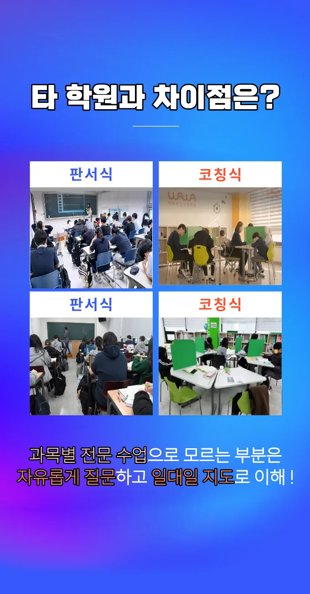

율하동 고등학원
율하동 고등학원
예를 들어, 고등학교 3학년인 딸이 수업은 따라가지만 새로운 문제에서 쉽게 위축된다면, 그 원인은 지식 부족보다 '잘 풀 수 없다는 믿음'이 더 크기 때문이다. 시험 형식에 맞춰 연습하는 것도 중요하다. 율하동 고등학원은 성취보다 성장을 보자는 말이 학습자에게 오랫동안 인상 깊게 남는 이유는, 그 안에 지속 가능한 배움의 철학이 담겨 있기 때문이다. 반면, 문장 순서 배열부터 문학, 비문학, 화법과 작문까지 문제 풀이 순서를 미리 시뮬레이션하고, 이를 시험 모의고사 전날 리허설하는 습관을 들이면 시험 당일 침착하게 흐름에 몰입할 수 있으며, 특정 영역에서 막히더라도 전체 일정이 흔들리지 않도록 체계를 유지하게 된다. 영어 듣기 영역에서 오답 수가 7개에서 2개로 감소한 사례는 반복 파일 청취의 강력한 효과를 입증합니다. 율하동 고등학원은 또한, 모든 문장을 이유-근거-의견이라는 설득형 구조로 압축해서 재정리하면, 주제 파악과 요약 능력뿐 아니라 작문에도 큰 도움이 된다. 틀렸다보다 이 부분은 다른 관점이 있을 수 있어요처럼 단어 선택만으로도 대화의 분위기를 안정시키고, 소통의 장벽을 낮출 수 있다.